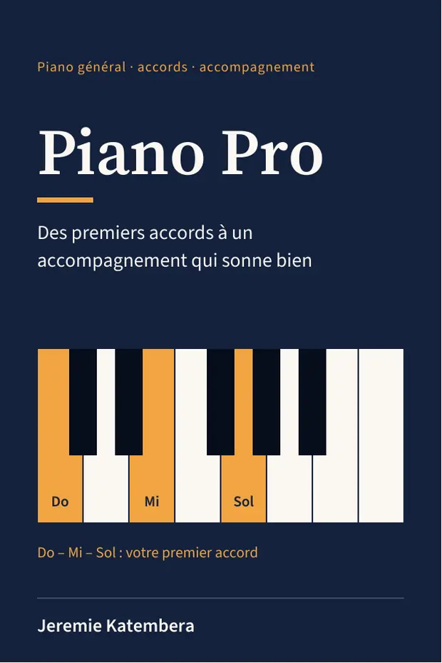
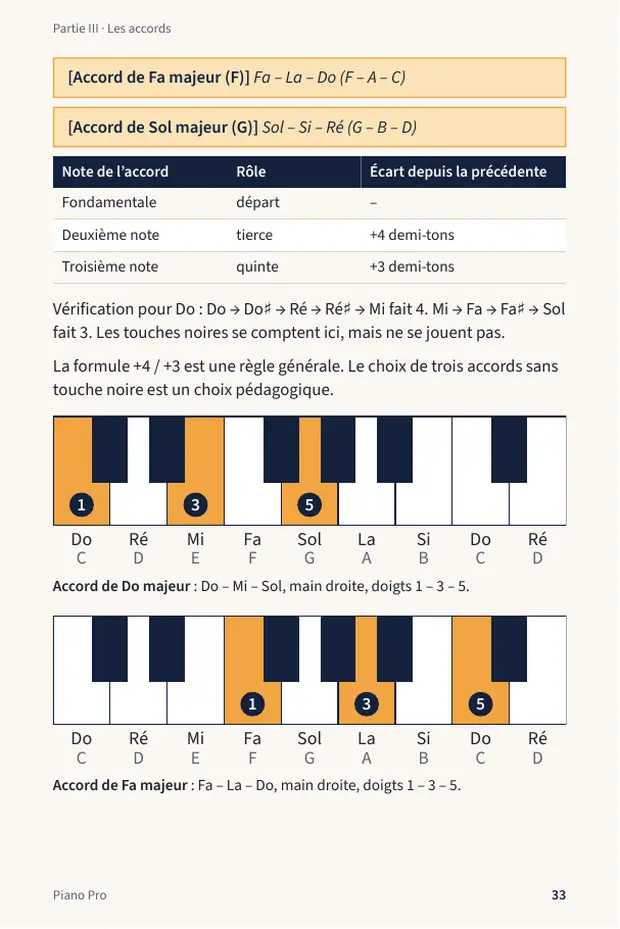
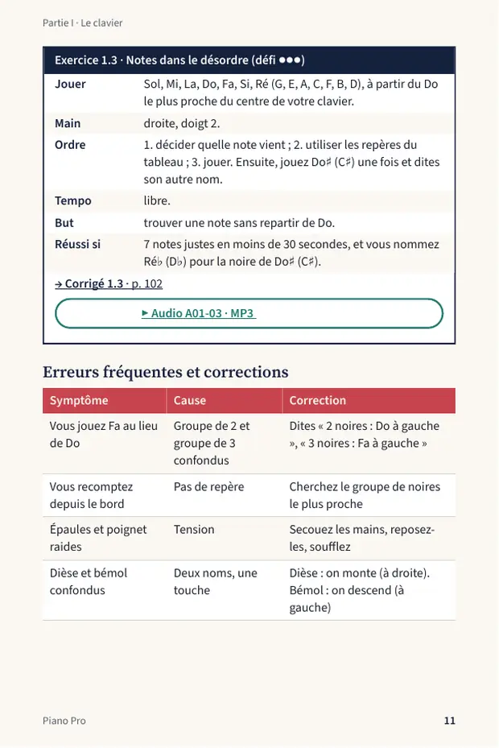
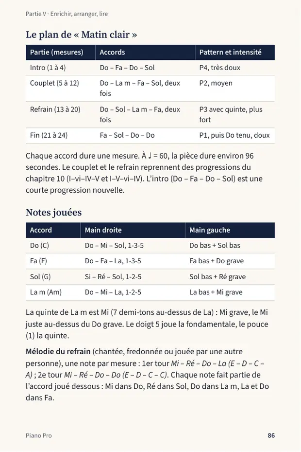

E-book PDF · piano et clavier · débutants
Apprenez les accords et accompagnez une chanson simple, même en partant de zéro.
Piano Pro vous guide pas à pas, des premières notes à une pièce complète jouée à deux mains. Sans solfège, avec des exercices corrigés et des audios de référence.
Par Jeremie Katembera · Livre numérique (PDF) · Prix et paiement sur la page d’achat officielle
Touchez les touches. Essayez Do, Mi et Sol ensemble.
Apprendre seul, c’est souvent là que ça se complique
- Des vidéos dispersées, sans ordre ni progression.
- Le solfège qui décourage avant la première note.
- Des accords copiés par cœur, sans comprendre pourquoi ils sonnent.
- Deux mains qui refusent de travailler ensemble.
- Un rythme qui s’arrête à chaque changement d’accord.
Piano Pro avance dans l’ordre, avec des gestes précis à faire à chaque chapitre.
Un accord, ça se construit
Dans le livre, chaque accord s’explique par une formule simple et un schéma de clavier. Choisissez un accord et voyez comment il se forme.
Sons de démonstration générés par votre navigateur. Les audios du livre sont des audios de référence au son de piano.
Cinq étapes, du clavier à une pièce complète
- I
Le clavier
Chapitres 1 à 2
Repérer les notes et les octaves, placer les mains, jouer vos premières mélodies avec les bons doigts.
- II
Le rythme
Chapitres 3 à 4
Tenir une pulsation régulière, compter à 4 et à 3 temps, jouer des croches et respecter les silences.
- III
Les accords
Chapitres 5 à 7
Construire des accords majeurs et mineurs avec une formule, les reconnaître à l’oreille, les jouer en plusieurs positions.
- IV
Accompagner à deux mains
Chapitres 8 à 10
Jouer une basse à la main gauche, quatre rythmes d’accompagnement, des progressions d’accords en Do et en Sol.
- V
Enrichir, arranger, lire
Chapitres 11 à 13
Quelques couleurs facultatives, une pièce complète, « Matin clair », puis la lecture d’une grille d’accords pour essayer d’autres chansons.
Ce que contient le livre
Dans chaque chapitre
- Une idée clé expliquée simplement
- Un schéma de clavier et des doigtés expliqués
- Une démonstration pas à pas
- Des exercices à trois niveaux : échauffement, application, défi
- Des corrigés avec un critère de réussite
- Les erreurs fréquentes et comment les corriger
- Un mini-test avec réponses
En plus
- Notes en français et en notation internationale : Do (C), Ré (D), Mi (E)…
- Un aide-mémoire des accords, des rythmes et des progressions
- Un programme de pratique sur 30 jours, d’environ 30 minutes par jour, avec fiche de suivi
- Une pièce originale de 24 mesures à jouer et à personnaliser
Feuilletez quelques pages




Extraits de la version actuelle du PDF.
Entendez ce que vous devez jouer
Chaque exercice ou démonstration a son audio de référence au son de piano : accords, rythmes, accompagnements, deux tests d’écoute pour distinguer majeur et mineur, et la pièce « Matin clair ». Les audios sont des modèles à imiter : ils ne corrigent pas votre jeu.
Les trois notes une à une, puis ensemble
Trois paires d’accords à comparer
Dans le PDF, un bouton ▶ placé près de chaque exercice lance l’audio correspondant. Les lecteurs PDF compatibles sont détaillés dans la FAQ.
Est-ce fait pour vous ?
Ce livre est pour vous si…
- vous partez de zéro, sans solfège ;
- vous voulez accompagner des chansons pop et variété ;
- vous avez un clavier de 49 touches ou un piano ;
- vous aimez progresser avec des exercices corrigés.
Il n’est pas fait pour vous si…
- vous voulez apprendre à lire des partitions ;
- vous cherchez les partitions de chansons connues ;
- vous visez le répertoire classique ;
- vous attendez un professeur qui corrige votre jeu.
Questions fréquentes
Ce livre convient-il à quelqu’un qui part de zéro ?
Oui, c’est exactement son niveau de départ. Aucune connaissance musicale n’est nécessaire et il ne faut pas savoir lire une partition. Le livre commence par le clavier : comment s’installer, retrouver Do grâce aux groupes de touches noires, puis nommer les notes. Chaque note est donnée en français et en notation internationale, par exemple Do (C), et chaque exercice indique les doigts à utiliser. Les termes techniques sont expliqués au moment où ils apparaissent.
Il s’adresse à ceux qui veulent accompagner des chansons pop et variété. Il ne s’agit pas d’une méthode classique centrée sur la lecture de partitions.
Que vais-je apprendre concrètement ?
Vous apprendrez à faire, étape par étape :
- repérer les notes sur le clavier et jouer des mélodies simples avec les deux mains ;
- compter une pulsation régulière, avec des mesures à 4 temps et à 3 temps ;
- construire des accords majeurs et mineurs, les reconnaître à l’oreille et les jouer en plusieurs positions ;
- jouer une basse à la main gauche, avec quatre rythmes d’accompagnement ;
- enchaîner des progressions d’accords courantes, en Do puis en Sol ;
- jouer une pièce complète, « Matin clair », avec intro, couplet, refrain et fin, puis en faire votre propre version ;
- lire une grille d’accords pour essayer d’autres chansons avec la même méthode.
Quelques accords « colorés » (sus4, Sol7, add9) sont proposés en option : le livre fonctionne sans eux. Le livre ne contient pas de partitions de chansons connues, mais il vous donne la méthode pour lire une grille d’accords.
Y aura-t-il une suite à ce livre ?
Oui. Une suite pourra être réalisée en fonction de la demande des lecteurs. Aucune date ni aucun contenu précis ne sont annoncés pour le moment.
À quoi servent les audios et comment fonctionnent-ils ?
Le livre comprend 78 audios de référence au son de piano : démonstrations d’exercices à tempo lent, accords, rythmes, accompagnements, et la pièce « Matin clair ». Chaque audio correspond à un exercice précis, avec le même code que dans le livre, par exemple A05-03 pour le chapitre 5, piste 3. Certains ont un clic de métronome et d’autres non.
Ils servent à entendre ce que vous devez jouer, à imiter le tempo et à entraîner votre oreille, avec deux tests d’écoute pour distinguer majeur et mineur. Ce sont des modèles de référence : ils ne corrigent pas votre jeu. Dans le PDF, un bouton de lecture ▶ placé près de chaque exercice lance l’audio correspondant.
De quoi ai-je besoin pour utiliser le livre et écouter les audios ?
Un clavier de 49 touches, de Do à Do, suffit (61 touches sont plus confortables), ou un piano. Désactivez l’accompagnement automatique et les rythmes intégrés. Aucune pédale n’est nécessaire.
Pour écouter les audios, il faut un lecteur PDF capable de lire les sons intégrés. Tous n’en sont pas capables :
- Windows et Mac : Adobe Acrobat Reader (gratuit). C’est le lecteur le plus sûr pour lire l’audio intégré.
- Linux : Okular (gratuit), qui prend en charge les médias intégrés aux PDF.
- Android et iPhone : la plupart des lecteurs PDF, dont Adobe Acrobat Reader sur mobile, ne lisent pas l’audio intégré. ezPDF Reader (Android et iPhone, application payante) indique le faire.
Si votre lecteur ne joue pas les audios, ouvrez simplement le PDF sur un ordinateur avec Adobe Acrobat Reader. Le texte, les schémas et les exercices restent lisibles partout.
Prêt à poser vos mains sur le clavier ?
Commencez par Do, Mi et Sol. Le reste vient dans l’ordre.
Le prix et le paiement s’affichent sur la page d’achat officielle.